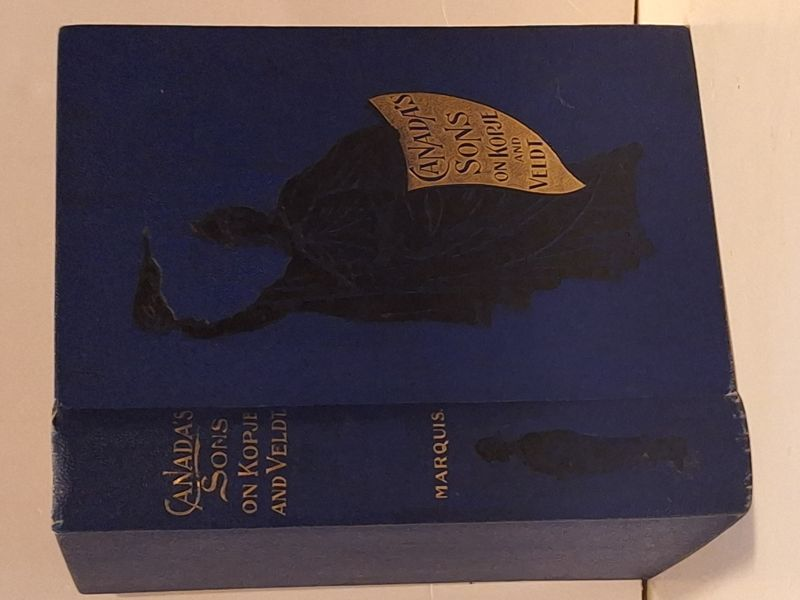

Canada's Sons on Kopje and Veldt: A Historical Account of the Canadian Contingents
Marquis, T.G., B.A. (with introductory chapter by George Munro Grant) · Canada's Sons Publishing Co., Toronto, 1900

C$32 · Fair condition
The Canada's Sons Publishing Co. (Bradley-Garretson Co., Limited), Toronto / Guelph / Brantford, 1900. First edition. Contemporary historical account of the Canadian contingents in the South African (Boer) War, based on the official despatches of Lieutenant-Colonel W.D. Otter and other Commanding Officers at the front, and on the letters and despatches of War Correspondents C. Frederick Hamilton, S.C. Simonski, Stanley McKeown Brown, John Ewan and W. Richmond Smith. Introductory chapter by George Munro Grant, LL.D., Principal of Queen's University. Richly illustrated. Decorative deep-blue pictorial cloth boards with gilt-stamped flag cartouche and silhouette of a soldier; spine reads 'CANADA'S SONS / ON KOPJE / AND VELDT / MARQUIS.' Marquis was the author of 'Stories of New France' and 'Marguerite de Roberval.' A classic Canadian Boer War source - entered according to Act of Parliament of Canada, 1900. Cloth shows rubbing, dampstain to front board, and edge wear; foxing to endpapers; binding sound; text block solid.
Details
- Publisher: Canada's Sons Publishing Co., Toronto, 1900
- Binding: Hardcover
- Edition: First Edition
- Condition: Fair
- Category: Military